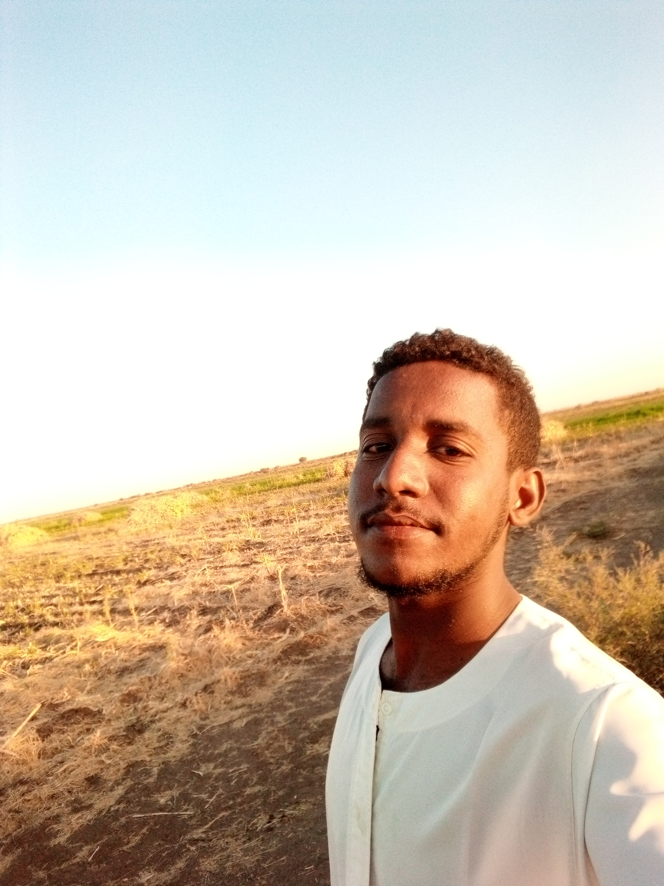
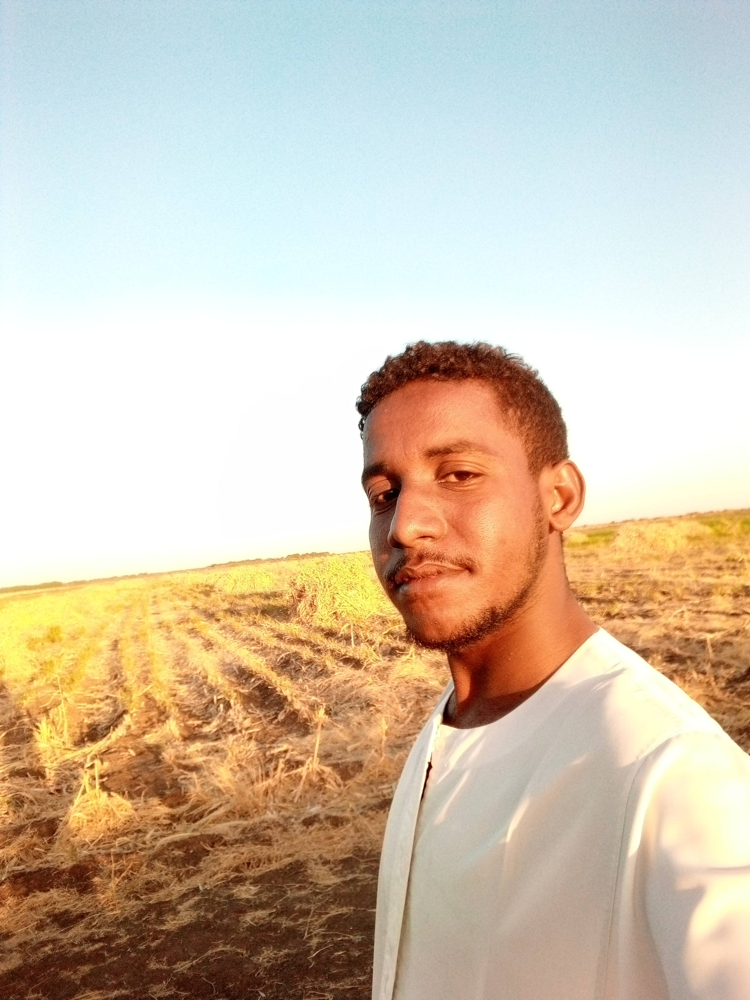
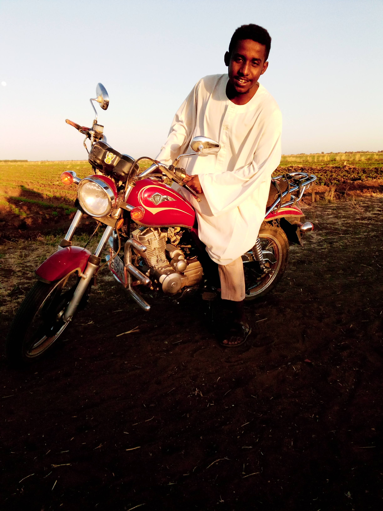
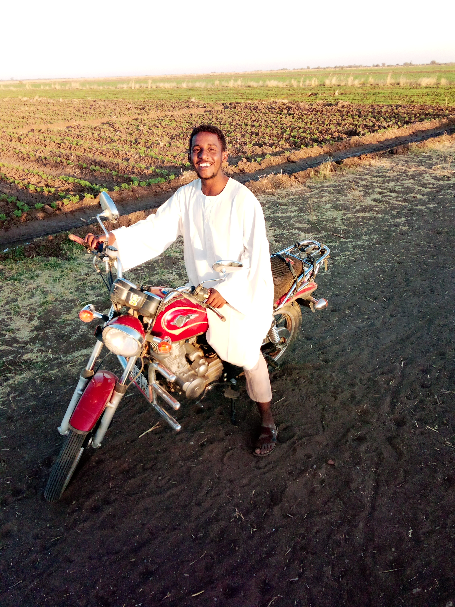

الاسم : ابوبكر احمد محمد
ادرس في كليةالعلوم الرياصيةوالحاسوب-الجزيرة
درست في مدرسة 24 القرشي الثانوية
درست في جاد العين المشتركة
أقيم في ود مدني
صور منطقتي
جاد العين.. 💙 تقع قرية جاد العين في ولاية الجزيرة جنوب الخرطوم (111 كلم) علي الضفة الغربية لنهر النيل الأزرق بالقرب من مدينة أبوعشر (12 كيلو متر) غرب طريق الخرطوم ودمدني..وتتبع اداريا لمحلية الحصاحيصا.. وتعتبر احدى اكبر قرى منطقة الحلاوين العريقة التي ينتمي اليها البطل السوداني عبد القادر ود حبوبة.. وينحدر معظم سكانها من قبيلة الشكرية العريقة.. ويبلغ عدد سكانها حوالي 3000 نسمة تقريبا.. تكسوها الخضره والجمال في فصل الخريف وتحيط بها من كل الجهات خاصه الغابه في غربها تعتبر منطقة سياحيه ومكان للرفاهية لسكان القرية وجيرانها.. اما بالنسبة لعمرانها فأهم مؤسساتها.. 1.توجد بالقرية اثنين من المساجد. 2.خلوة لتحفيظ القران لكل الفئات. 3.مركزصحي متطور . 4. مدرسة الاساس بنين 5. مدرسة الاساس بنات 6. المدرسة الثانوية المشتركة 6. يوجد ما لايقل عن اثنين من رياض الأطفال 7. ميدان كرة قدم 8.ومزارع للانتاج الحيواني.. مهنة أغلب سكان جاد العين التعليم والزراعة إذ تعتبر من اوائل قرى المنطقة التي انشئت بها المدارس وتعتبر حاضن لكثير من القرى القريبة لها.. ويشتهر اهلها بالكرم والجود.. ويعتبر ايضا سكان هذة المنطقة من رواد الانتاج الحيواني والزراعي نظرا لوجود القرية في قلب مشروع الجزيرة.. وبها عدد من المزارعين المجتهدين ك حاج الامين مساعد الذي يعتبر اول من ادخل زراعة السمسم في مشروع الجزيرة..وايضا محمد احمد مساعد علي الذي يعتبر من كبار المزارعين المؤثرين في المشروع .. وهي من أجمل وارقى قرى ولاية الجزيرة الخضراء..💙
.jpg)
.jpg)
.jpg)
صوري
   